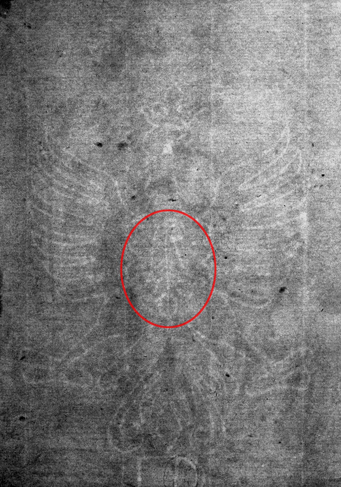
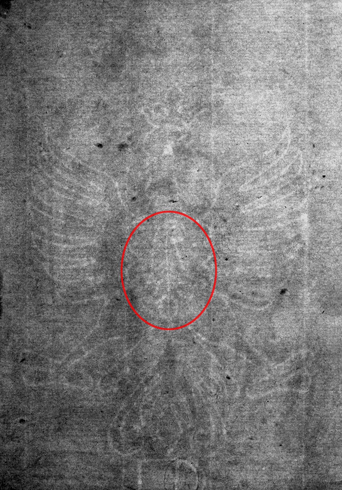

Single-Headed Eagle
↩ Back one step ↻ Restart this branch See branch diagramIs there a basel crosier at the center of the eagle?
Yes NoExample
Is there a basel crosier such as this one at the center of the eagle? (marked with grey).


Is there a basel crosier such as this one at the center of the eagle? (marked with grey).
